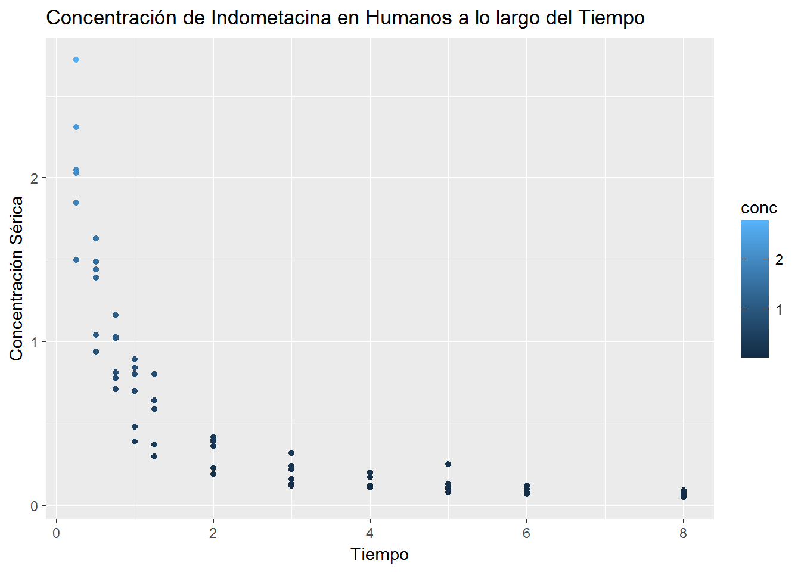

Capítulo 7 Tareas
7.1 Point Chart


7.2 Stratified Sampling
author: Dolores Ojeda, Gener Avilés R date: 2017-03-05
7.2.1 What is Stratified Sampling?
Population is partitioned in non-overlaping groups, called strata and a sample is collected from each stratum following a determined design.
7.2.2 Why use Stratified Sampling?
- May produce smaller error when estimating than simple random sample. Specially when measurements within strata have realitve small variation. - Cost by observation reduced. - There may be a need to have a subgroup (stratum) with similar estimates of those of the population.
7.2.3 Example
The Titanic Database:
## <U+FEFF>pclass survived name sex
## Min. :1.000 Min. :0.000 Length:1310 Length:1310
## 1st Qu.:2.000 1st Qu.:0.000 Class :character Class :character
## Median :3.000 Median :0.000 Mode :character Mode :character
## Mean :2.295 Mean :0.382
## 3rd Qu.:3.000 3rd Qu.:1.000
## Max. :3.000 Max. :1.000
## NA's :1 NA's :1
## age sibsp parch ticket
## Min. : 0.1667 Min. :0.0000 Min. :0.000 Length:1310
## 1st Qu.:21.0000 1st Qu.:0.0000 1st Qu.:0.000 Class :character
## Median :28.0000 Median :0.0000 Median :0.000 Mode :character
## Mean :29.8811 Mean :0.4989 Mean :0.385
## 3rd Qu.:39.0000 3rd Qu.:1.0000 3rd Qu.:0.000
## Max. :80.0000 Max. :8.0000 Max. :9.000
## NA's :264 NA's :1 NA's :1
## fare cabin embarked
## Min. : 0.000 Length:1310 Length:1310
## 1st Qu.: 7.896 Class :character Class :character
## Median : 14.454 Mode :character Mode :character
## Mean : 33.295
## 3rd Qu.: 31.275
## Max. :512.329
## NA's :2
## boat body home.dest
## Length:1310 Min. : 1.0 Length:1310
## Class :character 1st Qu.: 72.0 Class :character
## Mode :character Median :155.0 Mode :character
## Mean :160.8
## 3rd Qu.:256.0
## Max. :328.0
## NA's :11897.2.3.1 Variable Codes
- Pclass: 1 = Upper, 2 = Middle, 3 = Lower. - SibSp: Number of Siblings/Spouses aboard. - Parch: Number of Parents/Children Aboard. - Embarked: C = Cherbourg, Q = Queenstown, S = Southampton.
7.2.3.2 Calculating Probabilities to select people who embarked in Queenstown
\(P(A) = \frac{\text{Numero de elementos de A}}{n}\)
There are 1310 entries, and 123 of them embarked in Queenstown, nevertheless the risk of dying was equally present for them as for the passengers from Southampton or Cherbourg.
If a uniform proability is calculated the numbers are:
- \(P(Q) = \frac{123}{1310} =\) 0.0938931 - \(P(C) = \frac{270}{1310} =\) 0.2061069 - \(P(S)\frac{914}{1310} =\) 0.6977099
This approximation will hinder the process of data mining and, eventually, the generation of a machine learning model for survival prediction.
7.2.3.3 Fixing the Problem
By using stratified sampling we can raise the probability for the group that boarded in Queenstown and survived to be selected, therefore, taken in consideration for the generation of a survival prediction model. For this we will use conditional probability:
\(P(Survived|EmbarkedQ)= \frac{P(Survived\cap EmbarkedQ)}{P(EmbarkedQ)} = \frac{44}{123}=\) 0.3577236
library(dplyr)
Q<-filter(titanic, embarked == "Q" & survived == 1)
count(Q)## # A tibble: 1 × 1
## n
## <int>
## 1 44Chambers, John. 2000. “Stages in the Evolution of S.” March. http://ect.bell-labs.com/sl/S/history.html.